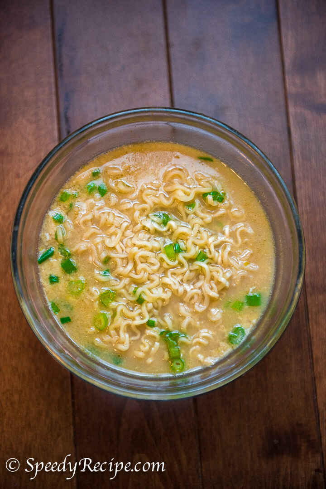

Egg Drop Ramen

Description
Very simple and fast dish to make. Just need your favorite instant ramen and an egg.
Ingredients
Steps
- Bring water to boil in a small pot (enough water to cover a block of ramen.
- Set timer for 2 minutes
- When 2 minutes is up add one cracked add to poach with ramen.
- Let that cook with ramen for 1 minutes then drain as much water as you would like from the ramen (I usually have very little water remaining)
- Put into bowl and enjoy.